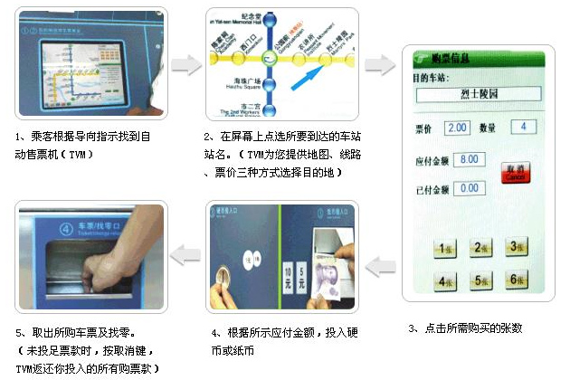

安全常识
一、进站前及站内通行注意事项
（一）请穿着舒适、防滑的鞋子，尽量不要穿着高跟鞋、拖鞋及状况不良的鞋子进站乘车。
（二）进站前请注意出入口的整体设计布局，防止踏空或与玻璃围墙发生碰撞，严禁翻越护栏。
（三）注意站内摆放的各类安全告示牌，例如“小心地滑”、“正在维修”等。
（四）站内通行时请注意地面状况，严禁奔跑、追逐。
（五）严禁在车站及车厢内吸烟、吐痰、丢弃果皮杂物。
（六）特殊情况时，请听从工作人员的指挥，到指定地点候车或出站。
二、搭乘扶梯注意事项
（一）踏上扶手电梯前
1、先看清楚运行方向
2、踏入时应加倍小心
3、避免宽松衣物贴近级边
4、切勿在入口范围站立或逗留
5、使用轮椅、携带婴儿车、手推车、行李或大件物品时，切勿使用扶手电梯
（二）使用扶手电梯时
1、紧握扶手
2、面向前方
3、站稳、切勿走动
4、避免站近级边
5、穿着凉鞋或拖鞋的乘客，小心扶梯级边
6、切勿靠在扶梯两边或倚在扶手上
7、切勿坐在梯级上
8、切勿奔跑、嬉戏、争先恐后
（三）离开扶手电梯时
1、尽时踏出
2、尽快离开出口范围
（四）一般安全指引：
1、小心照顾同行的老人和小孩
2、使用轮椅、携带婴儿车、手推车、行李或大件物品的乘客，请使用专用电梯
3、已经停止运行的扶梯梯级高低不一，使用时须加倍小心
4、如遇紧急情况，立即按下扶梯的紧急停止按钮
三、使用专用电梯注意事项
1、请让有需要的乘客优先使用；
2、请先让专用电梯内的乘客离开再进入；
3、请勿超载；
4、请勿靠近或手扶电梯门；
购票程序
单程票的购买
（一）现金支付

（二）手机支付购票
广州地铁部分车站已实现手机支付购买单程票功能，通过微信和支付宝进行支付，具体操作如下
1、手机支付购票入口
（1）打开微信，通过搜索或“扫一扫”二维码（下图）关注公众号“广州地铁微服务”，可进入购票页面。